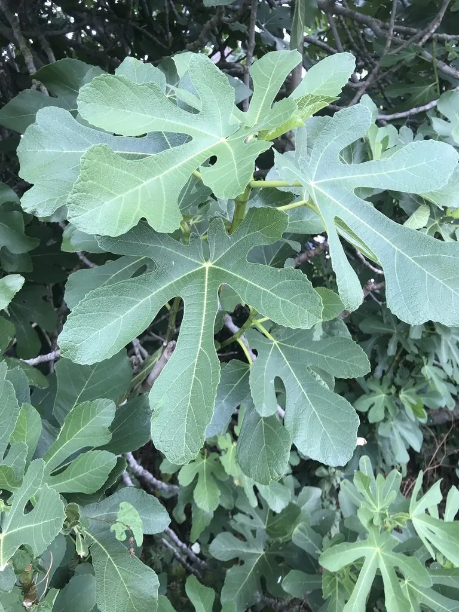

乔木 · 植物界
无花果 Ficus carica

原产地中海地区的落叶小乔木，隐头花序藏在囊状花托内，果实甘甜可食，栽培历史逾五千年，是古老果树。
- 分类
- 门被子植物门纲木兰纲目蔷薇目科桑科属榕属
- 栖息环境
- 海拔 1000 米以下的地中海气候区与庭院，喜光喜温暖，耐旱
- 地理分布
- 原产地中海地区及西亚，中国新疆、江苏、浙江、广东等地栽培
- 保护级别
- 暂无评估；中国未列入国家重点保护野生植物名录
物种志
无花果为落叶小乔木，高可达 10 m，树皮灰褐色、平滑，全株含白色乳汁；叶片互生，宽卵形，掌状 3–5 裂，表面粗糙。隐头花序生于叶腋，花藏在囊状花托内，从外面看不见，故称“无花果”；果实为聚花果，梨形，成熟时紫红色或黄绿色，果肉软糯甘甜。
无花果原产地中海地区及西亚，中国新疆、江苏、浙江、广东等地栽培，喜光、喜温暖，耐旱，适宜深厚肥沃、排水良好的土壤。栽培历史逾五千年，是最古老的栽培果树之一；果实可鲜食或制果干、果酱，富含糖类与多种营养成分；叶片与果实可入药。无花果多用扦插繁殖，生长快、结果早，也适合盆栽。
形态与习性
- 株高可达 10 m，全株含乳汁
- 花序隐头花序，花藏于囊状花托内
- 果期6–10 月，聚花果紫红色
- 光照喜光，不耐长期荫蔽
- 水分耐旱，怕积水
- 主要用途鲜食与果干果酱、叶果入药、盆栽
趣味知识
- 无花果的花藏在囊状花托内，从外面看不见，因此被称为“无花果”。
- 无花果是最古老的栽培果树之一，栽培历史逾五千年。
- 无花果多用扦插繁殖，生长快、结果早，很适合家庭盆栽。